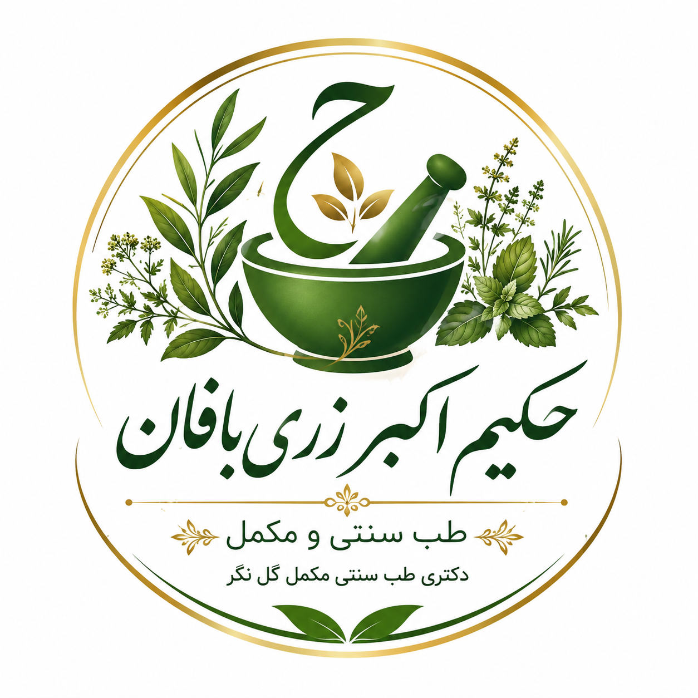

راههای ارتباط با مطب
موقعیت مطب
نارمک، خیابان دکتر آیت جنوبی
ساختمان اسپیدار، پلاک ۳۵۰، واحد ۱۰
شماره تماس: 09357923277
مشاهده روی نشان
دکتری طب سنتی مکمل گل نگر
حفظ سلامت بانوان، اصلاح مزاج و کمک به بهبود مشکلات شایع بر پایه اصول طب سنتی ایرانی
سلامت بانوان نقش مهمی در سلامت خانواده و جامعه دارد. بسیاری از مشکلات مربوط به بانوان میتوانند تحت تأثیر تغذیه، سبک زندگی، مزاج و شرایط جسمی و روحی ایجاد شوند.
در طب سنتی ایرانی، با بررسی دقیق مزاج و شرایط فرد، تلاش میشود علت اصلی اختلالات شناسایی و با اصلاح تغذیه، سبک زندگی و تدابیر درمانی مناسب، تعادل طبیعی بدن برقرار گردد. هدف درمان، کمک به حفظ سلامت و ارتقای کیفیت زندگی بانوان است.
بررسی مزاج و ایجاد تعادل برای کمک به سلامت عمومی بانوان.
تنظیم برنامه غذایی متناسب با شرایط جسمی و نیازهای هر فرد.
استفاده از گیاهان دارویی مناسب با نظر متخصص طب سنتی و متناسب با شرایط بیمار.
توجه به خواب کافی، فعالیت بدنی مناسب، کاهش استرس و رعایت تدابیر طب سنتی.
نارمک، خیابان دکتر آیت جنوبی
ساختمان اسپیدار، پلاک ۳۵۰، واحد ۱۰
شماره تماس: 09357923277
مشاهده روی نشان